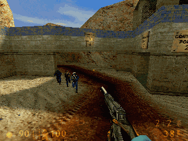

Si vous souhaitez aider le project, n'hésitez pas à m'envoyer tout commentaire, patch, rapport de bug, n'importe quoi qui puisse faire avancer le travail.
Les patchs seront audités, et s'ils s'avèrent adéquats et pertinents, seront inclus dans la prochaine version des bots. Mais n'oubliez pas que RACC est Open Source et que vous pouvez tout faire du code source: lisez la licence pour plus de détails.
|
La liste des tâches pour l'IA RACC est la suivante: |
Team Fortress Classic: un groupe de bots se rue à l'assaut

Redistribution and use in source and binary forms with or without modification, are permitted provided that the following conditions are met:
Redistributions of source code must retain the above copyright notice, this list of conditions and the following disclaimer.
Redistributions in binary form must reproduce the above copyright notice, this list of conditions and the following disclaimer in the documentation and/or other materials provided with the distribution.
Redistributions in source or binary form must reproduce the following sentence: THIS SOFTWARE CONTAINS CODE FROM BOTMAN'S HIGH PING BASTARD BOT SOURCE CODE TEMPLATE (http://www.planethalflife.com/botman)
Neither the name of this project nor the names of its contributors may be used to endorse or promote products derived from this software without specific prior written permission.
THIS SOFTWARE IS PROVIDED BY PM "AS IS" AND ANY EXPRESS OR IMPLIED WARRANTIES, INCLUDING, BUT NOT LIMITED TO, THE IMPLIED WARRANTIES OF MERCHANTABILITY AND FITNESS FOR A PARTICULAR PURPOSE ARE DISCLAIMED. IN NO EVENT SHALL THE CONTRIBUTORS BE LIABLE FOR ANY DIRECT, INDIRECT, INCIDENTAL, SPECIAL, EXEMPLARY, OR CONSEQUENTIAL DAMAGES (INCLUDING, BUT NOT LIMITED TO, PROCUREMENT OF SUBSTITUTE GOODS OR SERVICES; LOSS OF USE, DATA, OR PROFITS; OR BUSINESS INTERRUPTION) HOWEVER CAUSED AND ON ANY THEORY OF LIABILITY, WHETHER IN CONTRACT, STRICT LIABILITY, OR TORT (INCLUDING NEGLIGENCE OR OTHERWISE) ARISING IN ANY WAY OUT OF THE USE OF THIS SOFTWARE, EVEN IF ADVISED OF THE POSSIBILITY OF SUCH DAMAGE.

Heckler and Koch Tactical USP .45